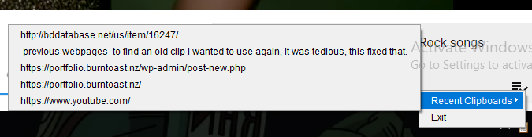
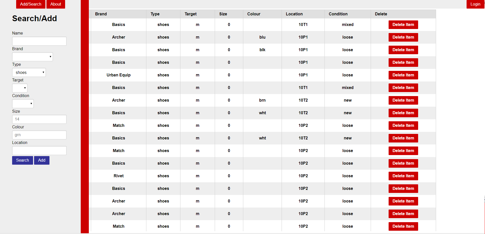
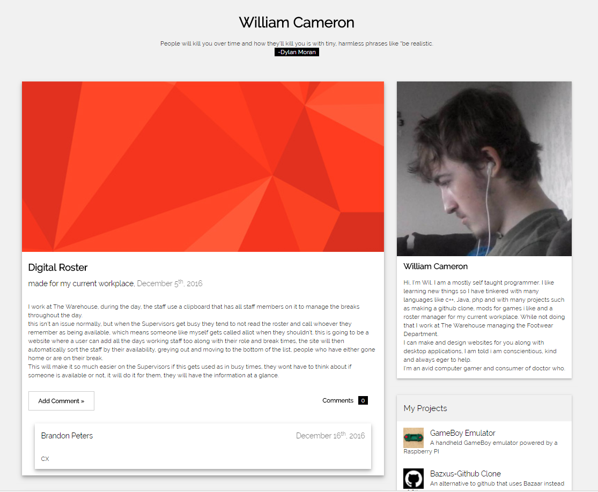

Hello There!
I'm Wil, a self taught programmer. This is my website, you can read a bit more about me, take a look at some of my personal projects or contact me. Have a nice stay!
I am William Cameron, I currently reside in Christchurch, New Zealand, but I was born in England. I am told I am conscientious, kind, loyal and always eager to help. I work full time at The Warehouse where I manage the Footwear Department. In the evenings I go to Computer Power Plus where I am doing an IT Degree.
When I am not doing any of those I can be found gaming or programming. I tend to make software that will assist me at work like the StockFinder website I made that helps me keep track of the stock I have in storage that cant go out yet, as we don't have a system for tracking stock. I will also make mods for games that I play to add features I think that should be there, or just fun things like the WYEM Mod for Minecraft.
I like learning new things so I have tinkered with many projects in different languages such as c++, Java, PHP, GO, D to name a few. When I am doing a personal project I tend to constantly change the language or library I am using because I believe I can make it more user friendly, neater, faster and better in another language, or just because I am curious about how it works.
Clippy
A desktop app to record all your clipboard copies so you can use them again when you overwrite it.
it is made with java
 You can download it or see the source code on GitHub
You can download it or see the source code on GitHub
The Pros
The app has been very useful to me, it sits in the tray recording my clipboard entries, if I copied something a while ago and can't find it again, it will be sitting in clippy, I just have to right click it, and select the sting I want to set to my clipboard. you can also modify how much it remembers, by default it's the last 10 entries, but it has a settings menu so you can adjust that to whatever you like.
The Cons
you can manually make it run at startup, but it has a checkbox to set it too run at startup that doesn't work at the moment as I have to account for all operating systems, which I haven't got round to doing yet.
Stock Finder
A website I can run on my phone to record where all my excess stock is at work for finding easily months later.
It is made with CodeIgniter, a PHP framework. and MySQL as a database.
you can see the working site here. or view the source code on GitHub
The Pros
I was quite pleased with this project, I learnt a lot about MySQL and User Authentication by making this. It is fully functional, it can record all the shoes I store at work, the forms presented to the user are dynamic based on the MySQL database incase I add new Categories of shoes or remove them. you can search for everything or apply a filter. You can delete a single item or add new Items to the database.
The Cons
The website isn't overly pretty, it was designed more for form than function, the one major con with this application is it is quite tedious. it takes quite a lot of time to type in the name, brand, location of a product you're adding to StockFinder. your browser will help by remembering previous entries which speeds things up, but I realised the best way to make this as efficient as possible is via the barcodes that are on every product. I can not reasonably use that. I require access to my workplaces stock database and they wouldn't give me that kind of access. the only options is leave it there but be a bit inefficient or to make a web crawler to go through the company's public website to scrape off information like all the barcodes, names of products, brands etc.
Blog
This is a blog website I made, originally designed as my portfolio
the project is made with CodeIgniter a PHP Framework and MySQL as a database.
you can view the working site here or view the source code at GitHub
The Pros
I have never been satisfied with my portfolio, I have changed it 4 times already, this was attempt 2. the idea was that the home page contained a description about me, the latest blog posts, which were updates to projects I have made as well as links to how all updates to a specific project. I have all of these features working as well as users have the ability to post comments on a post and I can log into the site too add/remove comments/post/projects.
The Cons
I realised once I made the blog, I never used it, I'm not a fan of the design I came up with for the blog either, it was not really my style
You can contact me via:
Or via any of the Social Media links below
Self Taught Skills
- PHP
- MySQL
- HTML/CSS
- JavaScript
- Java
- Bash
- VMWare Workstation
- C++
- Powershell
- Home Computer Maintenance, repair
- Linux (RedHat, Ubuntu, Arch)
- Windows Server 2008 and 2012
- Microsoft Office & Excel
- Customer Service
Cources Completed
| Information and Communication Skills | Introduction of Information Technology | Introduction to Programming | Practical Skills in ICT |
| Problem Solving in ICT | Computer Architecture | Internet Technologies | Introduction to Scripting |
| Software Applications | Software Engineering 1A | Software Engineering 1B | Applications Infrastructure |
| Database Management Systems | Directory Services | Network Infrastructure | Website Development |
| Network Operating Systems (Linux) | Alternative Modelling | Applications Infrastructure | Introduction to Networks |
| Network Operating Systems (Windows) | Helpdesk Support |
Education
2013: Certificate in IT at Ara
2012: NCEA level 3 in Computing, Maths with Calculus, Digital Technology, Physics, Biology, Design and Visual Communication, R.E
Career History
2010 - Present: The Warehouse, Hornby and South City
Role: Shoe Department Manager
Responsibilities: Stock movement, stocktaking, customer enquiries on the phone and around the store. Organising and implementing seasonal stock changes every quarter. Excellent customer service, knowledge of products and store layout are essential for this role.